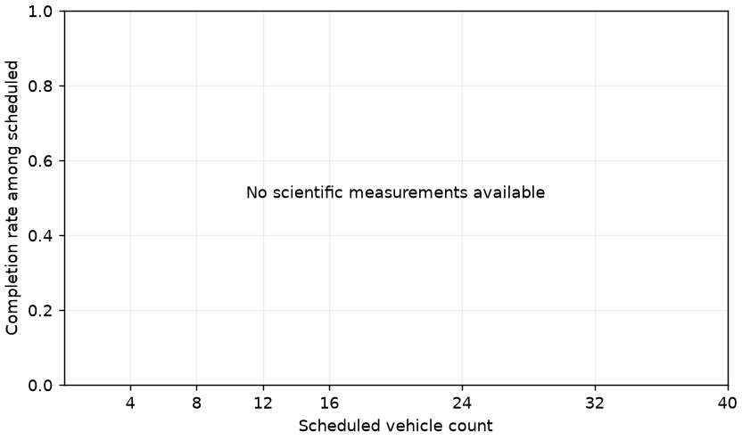
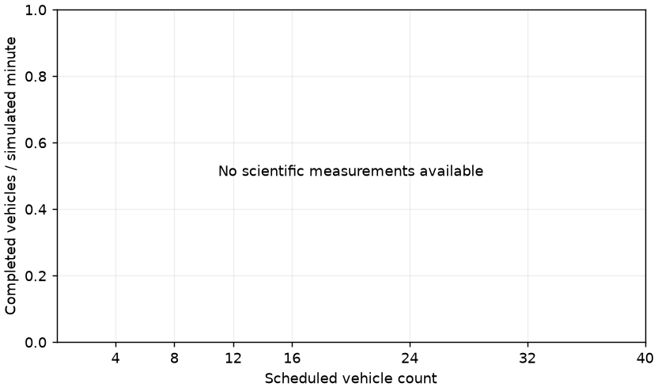
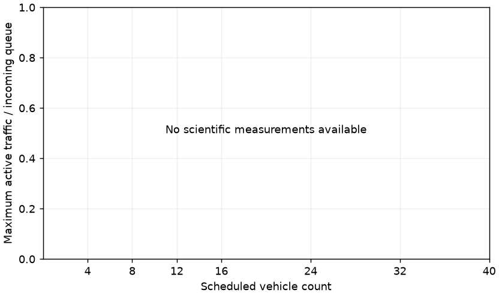
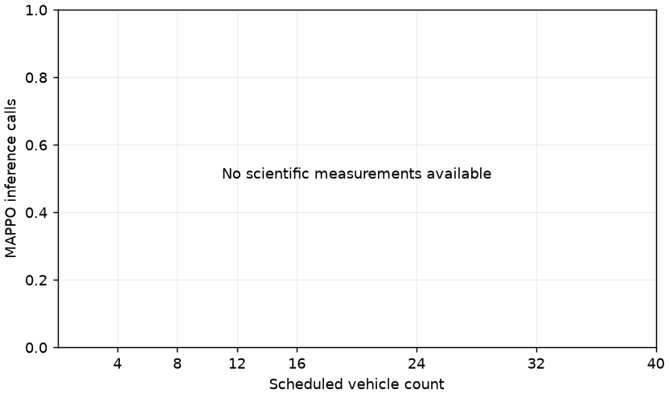
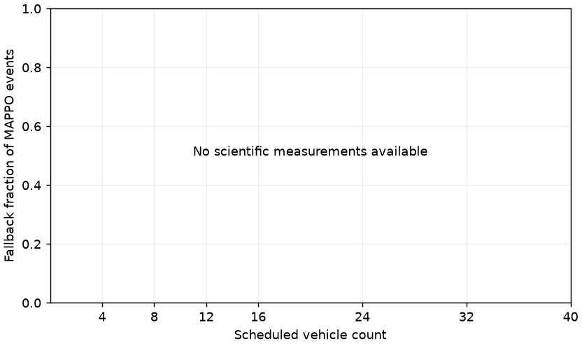

SCALABILITY_VALIDATION_V2 uses fixed 0.4-second staggered NESW round-robin departures and unchanged V1 legal movements. This avoids identical initial requested departure times; it does not guarantee separated junction arrivals or prevent deadlock. The seven-point targeted study varies total scheduled vehicles from 4 to 40 under the same intersection, policy, rules and demand-prefix family. V1 remains separate historical evidence. One episode per load provides no confidence intervals or universal capacity estimate.
Manifest: 7b8ad8d40ccf1c0ab9996c7eca4d1c11fc8587a63c07258ac10ae4e93eedfda2
Study incomplete: 0/7 scientific cases recorded. Preflight is excluded from trends.
No exact capacity threshold between tested points is inferred. Incomplete waits and travel exposure are censored; read them with stop time, insertion and completion counts.
| Load | Scheduled | Spawned | Completed | Completion % | Collisions | Blocked violations | Mean wait | Max wait | Throughput | MAPPO calls | Fallback % | Result |
|---|---|---|---|---|---|---|---|---|---|---|---|---|
| SV-04 | 4 | N/A | N/A | N/A | N/A | N/A | N/A | N/A | N/A | N/A | N/A | NOT_RUN |
| SV-08 | 8 | N/A | N/A | N/A | N/A | N/A | N/A | N/A | N/A | N/A | N/A | NOT_RUN |
| SV-12 | 12 | N/A | N/A | N/A | N/A | N/A | N/A | N/A | N/A | N/A | N/A | NOT_RUN |
| SV-16 | 16 | N/A | N/A | N/A | N/A | N/A | N/A | N/A | N/A | N/A | N/A | NOT_RUN |
| SV-24 | 24 | N/A | N/A | N/A | N/A | N/A | N/A | N/A | N/A | N/A | N/A | NOT_RUN |
| SV-32 | 32 | N/A | N/A | N/A | N/A | N/A | N/A | N/A | N/A | N/A | N/A | NOT_RUN |
| SV-40 | 40 | N/A | N/A | N/A | N/A | N/A | N/A | N/A | N/A | N/A | N/A | NOT_RUN |





{
"automatic_run_allowed": false,
"evidence_classification": "PREFLIGHT_NOT_SCIENTIFIC_RESULT",
"evidence_family": "SCALABILITY_VALIDATION_V2",
"full_study_started": false,
"historical_dense_reference": {
"path": "results\\panel_validation\\v2\\runs\\20261008T175551068657Z_095c9470\\result.json",
"simulated_seconds": 180.0,
"wall_seconds": 501.1883240000461,
"workload_factor": 2.5
},
"integrity": {
"backward_calls": 0,
"centralized_critic_runtime_calls": 0,
"centralized_execution_graph_used_for_control": false,
"decentralized_execution": true,
"frozen_sources_unchanged": true,
"global_execution_calls": 0,
"modules_in_evaluation_mode": true,
"optimizer_steps": 0,
"parameter_updates": 0,
"policy_hash_unchanged": true,
"policy_sha256_after": "2ab2029fdd66f96c3ba0acf5e76487c96740161e898539f93c726228097eaf57",
"policy_sha256_before": "2ab2029fdd66f96c3ba0acf5e76487c96740161e898539f93c726228097eaf57",
"state_dict_unchanged": true,
"training_operations": 0,
"valid": true
},
"manifest_hash": "7b8ad8d40ccf1c0ab9996c7eca4d1c11fc8587a63c07258ac10ae4e93eedfda2",
"metrics": {
"blocked_zone_violation_count": 0,
"collision_count": 0,
"deadlock_detected": true,
"deadlock_observed": true,
"insertion_delayed_vehicle_count": 0,
"mappo_inference_call_count": 1,
"maximum_negotiation_participants": 4,
"native_emergency_braking_events": 0,
"never_spawned_before_budget": 0,
"termination_reason": "DEADLOCK_CONFIRMED",
"timeout": false,
"total_vehicles_completed": 0,
"total_vehicles_scheduled": 4,
"total_vehicles_spawned": 4
},
"observed_simulated_seconds": 38.56,
"projected_full_budget_wall_seconds": 8770.795670000805,
"projection_method": "Maximum of preflight wall/sim ratio and preserved PV-04A wall/sim ratio * 40/16, multiplied by 1260 sim seconds. Conservative planning estimate, not a guarantee; ignores possible early stops.",
"run_id": "20261009T073517867706Z_b8f9f892",
"traffic_classification": "SAFE_DEGRADATION",
"wall_clock_seconds": 32.9929470999632
}